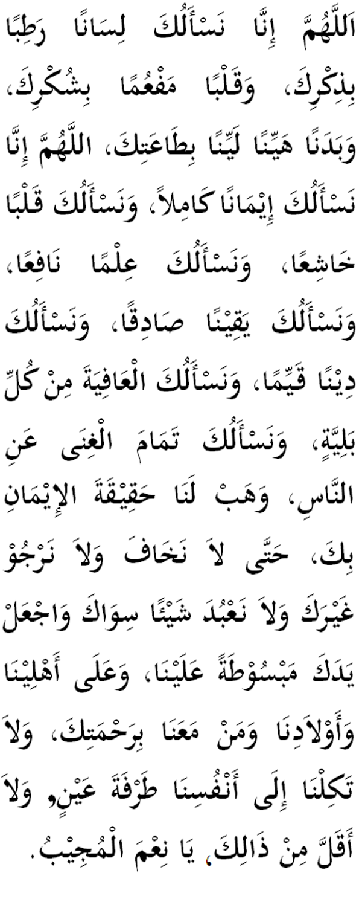

|
Terjemahan "Ya Allah kurniakanlah kami lisan yang lembut basah mengingati dan menyebut (nama) Mu, serta badan yang ringan menyempurnakan ketaatan kepada perintahMu. Ya Allah, kurniakanlah kami iman yang sempurna, hati yang khusyuk, ilmu yang berguna keyakinan yang benar-benar mantap. (Ya Allah) kurniakanlah kami (ad-Deen) cara hidup yang jitu dan unggul selamat dari segala mara bahaya dan petaka. Kami mohon (Ya Allah) kecukupan yang tidak sampai terpaksa meminta jasa orang lain. Berikanlah kami (Ya Allah) iman yang sebenarnya sehingga kami tidak lagi gentar atau mengharapkan orang lain selain dari Engkau sendiri. Kembangkanlah lembayung rahmatMu kepada kami, keluarga dan anak-anak kami serta sesiapa sahaja yang bersama-sama kami. Janganlah (Ya Allah) Engkau biarkan nasib kami ditentukan oleh diri kami sendiri, walaupun kadar sekelip mata atau kadar masa yang lebih pendek dari itu. Wahai Tuhan yang mudah dan cepat memperkenankan permintaan (perkenankanlah)." |

|